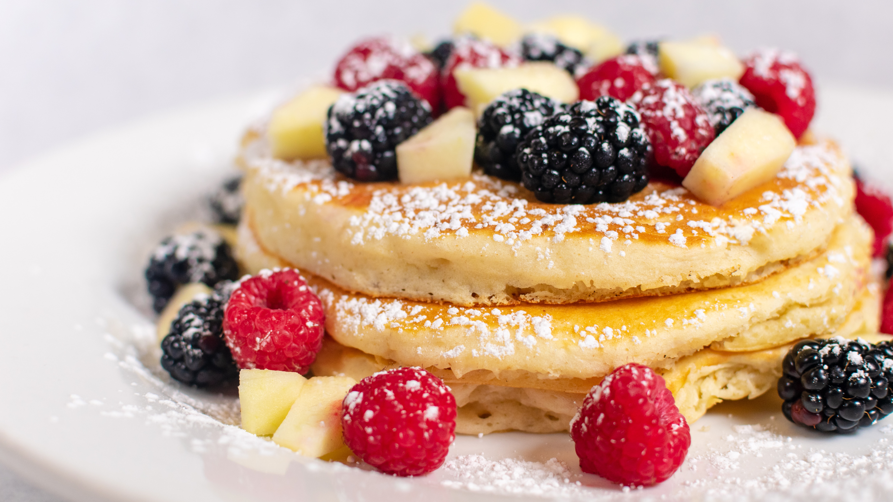

American Pancakes

15 Min
simpel
20.12.22
15 Min
simpel
20.12.22
Zutaten für
| 500g Mehl |
| 400ml Milch |
| 2 Esslöffel Erdnussbutter |
| 1 Prise Zucker |
| 3 Eier |
| 1 Reife Banane |
| Kokosnussflocken |
| 10g Gemahlene Mandeln |
ca. 15 Minuten
Gesamtzeit ca. 20 Minuten